Since 19351935 முதல்A family mill in Thiruvanaikoilதிருவானைக்கோவிலில் குடும்ப மில்
Cast-iron expellerவார்ப்பிரும்பு இயந்திரம்Each oil pressed on its ownஒவ்வொரு எண்ணெயும் தனியாக
4 to 7 days settling4 முதல் 7 நாட்கள்Never filtered or refinedவடிகட்டுவதில்லை, சுத்திகரிப்பதில்லை
All of Tamil Naduதமிழ்நாடு முழுவதும்Delivered to your doorவீடு தேடி விநியோகம்
Our oilsஎங்கள் எண்ணெய்கள்
Five oils, each pressed on its own. Pick a pack size and add it to your cart.ஐந்து எண்ணெய்கள், ஒவ்வொன்றும் தனியாகப் பிழியப்படுகிறது. அளவைத் தேர்ந்தெடுத்து கார்ட்டில் சேர்க்கவும்.
Sesame seed, dried in the sun and pressed straight away. Nothing added, nothing blended. It rests for days before it is bottled, so what reaches your kitchen is oil and only oil.வெயிலில் உலர்த்தி உடனே பிழியப்பட்ட எள். எதுவும் சேர்க்கப்படவில்லை, கலப்படம் இல்லை. பாட்டிலில் அடைக்கும் முன் பல நாட்கள் தெளிய வைக்கப்படுவதால், உங்கள் சமையலறைக்கு வருவது எண்ணெய் மட்டுமே.
Tempering, frying and everyday cookingதாளிப்பு, வறுவல் மற்றும் தினசரி சமையல்
Pickles and traditional sweetsஊறுகாய் மற்றும் பாரம்பரிய இனிப்புகள்
Colour and aroma shift a little with the season's seedபருவத்தின் விதையைப் பொறுத்து நிறம், மணம் சிறிது மாறலாம்
Combos and specialsகாம்போ மற்றும் சிறப்பு சலுகைகள்
Packs put together by the mill, and offers that run for a short time.மில் சார்பில் தயாரிக்கப்பட்ட தொகுப்புகள் மற்றும் குறுகிய காலச் சலுகைகள்.
How we make itஎப்படி தயாரிக்கிறோம்
Five steps, in the same order every time. No roasting, no filtering, no refining.ஐந்து படிகள், ஒவ்வொரு முறையும் ஒரே வரிசையில். வறுப்பதில்லை, வடிகட்டுவதில்லை, சுத்திகரிப்பதில்லை.
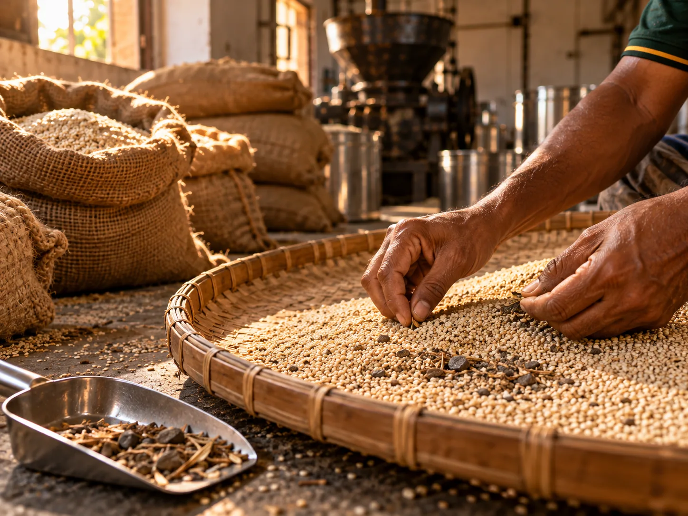
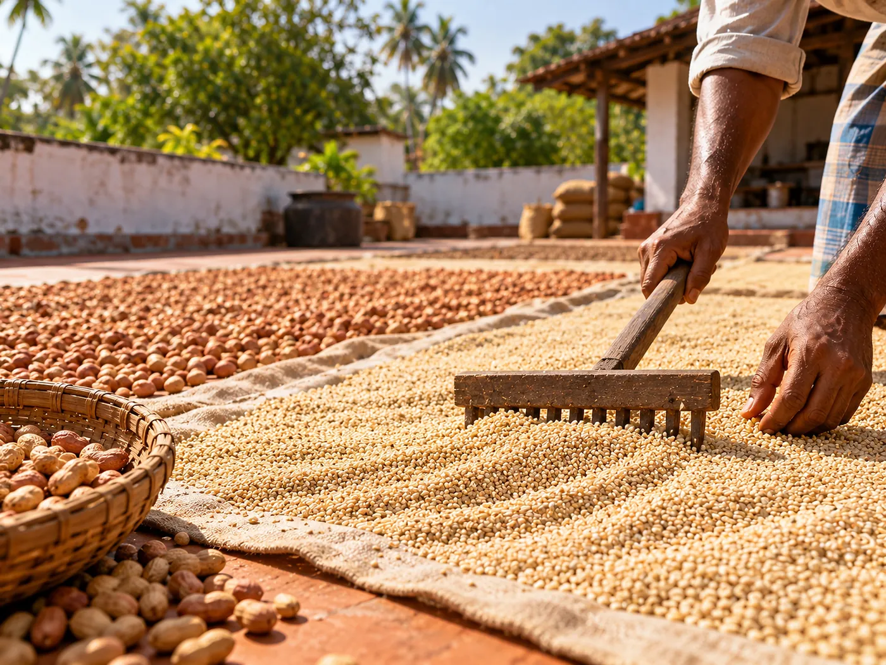
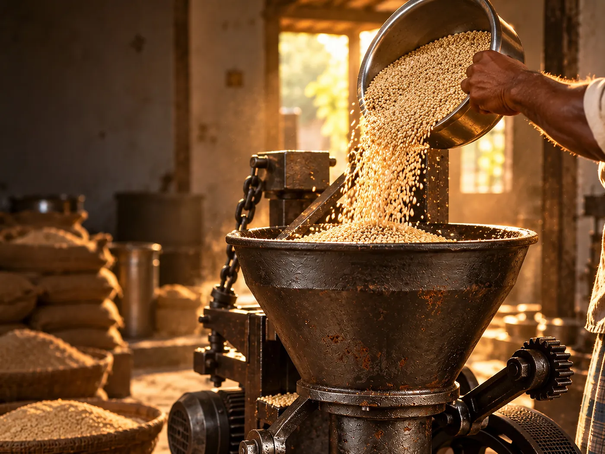
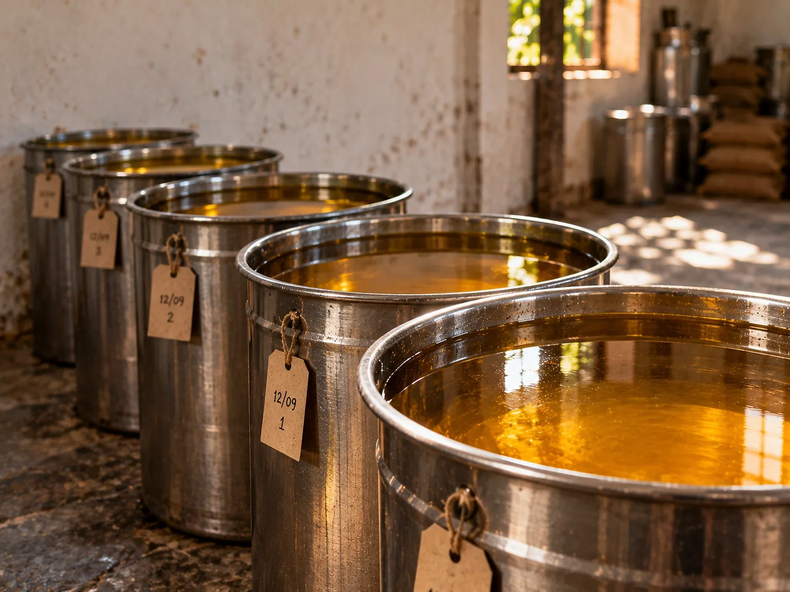
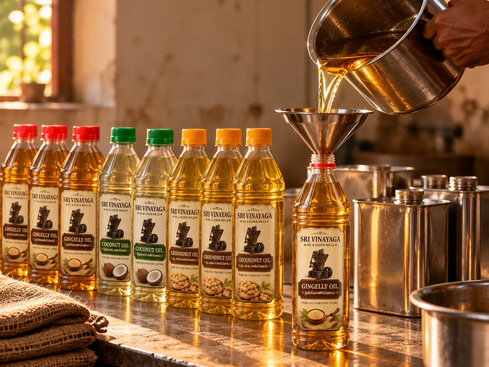
Choose the seedவிதையைத் தேர்ந்தெடுத்தல்
We take in one kind of seed at a time. Each oil is pressed on its own and is never blended with another.ஒரு நேரத்தில் ஒரே வகை விதையை மட்டுமே எடுத்துக்கொள்கிறோம். ஒவ்வொரு எண்ணெயும் தனியாகப் பிழியப்படும்; வேறு எண்ணெயுடன் கலப்பதில்லை.
Dry it in the sunவெயிலில் உலர்த்துதல்
Before it goes near the machine, the seed is spread out and dried in open sun.இயந்திரத்துக்குச் செல்லும் முன் விதை திறந்த வெயிலில் பரப்பி உலர்த்தப்படுகிறது.
Press straight awayஉடனே பிழிதல்
Sun-dried seed goes directly into our cast-iron screw expeller. We do not roast it first.வெயிலில் உலர்ந்த விதை நேரடியாக வார்ப்பிரும்பு திருகு இயந்திரத்தில் செல்கிறது. முன்னதாக வறுப்பதில்லை.
Settle for 4 to 7 days4 முதல் 7 நாட்கள் தெளிய வைத்தல்
The oil rests in stainless steel drums until the sediment sinks. How long that takes depends on the oil and the weather. We do not filter or refine it.எண்ணெய் துருப்பிடிக்காத எஃகு பாத்திரங்களில் வண்டல் அடியில் படியும் வரை வைக்கப்படுகிறது. எவ்வளவு நாள் ஆகும் என்பது எண்ணெய் வகை மற்றும் பருவத்தைப் பொறுத்தது. வடிகட்டுவதோ சுத்திகரிப்பதோ இல்லை.
Fill and packநிரப்பி அடைத்தல்
Settled oil is drawn off and filled into PET bottles, cans and tins.தெளிந்த எண்ணெய் PET பாட்டில்கள், கேன்கள் மற்றும் டின்களில் நிரப்பப்படுகிறது.
Because the oil is unrefined and the seed changes with the season, colour and aroma can differ slightly from one batch to the next. That is the seed, not a fault.எண்ணெய் சுத்திகரிக்கப்படாதது, விதையும் பருவத்துக்கேற்ப மாறும் என்பதால், ஒவ்வொரு தொகுதியிலும் நிறம், மணம் சிறிது மாறுபடலாம். இது விதையின் இயல்பு; குறைபாடு அல்ல.
Three generations of oil-making, since 19351935 முதல் மூன்று தலைமுறைகளாக எண்ணெய் தொழில்
Sri Vinayaga Oil & Flour Mills began in 1935, when Gurumurthy Chettiar set up a bullock-driven oil press (maattu chekku) in the Beemanagar area, the only one in Trichy at that time. His son, Vaithilingam Gurumurthy Chettiar, took the business into a new era in 1963, and today Kathirvel Vaithilingam Chettiar carries it forward.ஸ்ரீ விநாயகா ஆயில் & ஃப்ளோர் மில்ஸ் 1935-ஆம் ஆண்டு குருமூர்த்தி செட்டியார் அவர்களால் பீமநகர் பகுதியில் மாட்டுச் செக்குடன் தொடங்கப்பட்டது; அன்றைய திருச்சியில் இருந்த ஒரே செக்கு அதுவே. அவரது மகன் வைத்திலிங்கம் குருமூர்த்தி செட்டியார் 1963-ல் தொழிலை புதிய காலகட்டத்துக்கு எடுத்துச் சென்றார்; இன்று கதிர்வேல் வைத்திலிங்கம் செட்டியார் அதைத் தொடர்ந்து நடத்துகிறார்.
Today we make gingelly, groundnut, coconut, castor and neem oils at our Thiruvanaikoil mill, which also houses flour milling, a rice mill and cattle feed manufacture, with wholesale and retail sales. We deliver across Tamil Nadu to homes, hotels, temples and shops.இன்று திருவானைக்கோயில் மில்லில் நல்லெண்ணெய், கடலை எண்ணெய், தேங்காய் எண்ணெய், விளக்கெண்ணெய், வேப்ப எண்ணெய் தயாரிக்கிறோம்; இங்கு மாவு அரைத்தல், அரிசி ஆலை, கால்நடைத் தீவனத் தயாரிப்பு, மொத்த மற்றும் சில்லறை விற்பனையும் நடைபெறுகிறது. தமிழ்நாடு முழுவதும் வீடுகள், ஹோட்டல்கள், கோயில்கள், கடைகளுக்கு அனுப்புகிறோம்.
Our customers include families in Srirangam, Chennai, Madurai and Karur, among them people working in media and IT in Chennai.ஸ்ரீரங்கம், சென்னை, மதுரை, கரூர் பகுதிகளைச் சேர்ந்த குடும்பங்கள் எங்கள் வாடிக்கையாளர்கள்; சென்னையில் ஊடகம் மற்றும் ஐடி துறையில் பணிபுரிபவர்களும் இதில் அடங்குவர்.
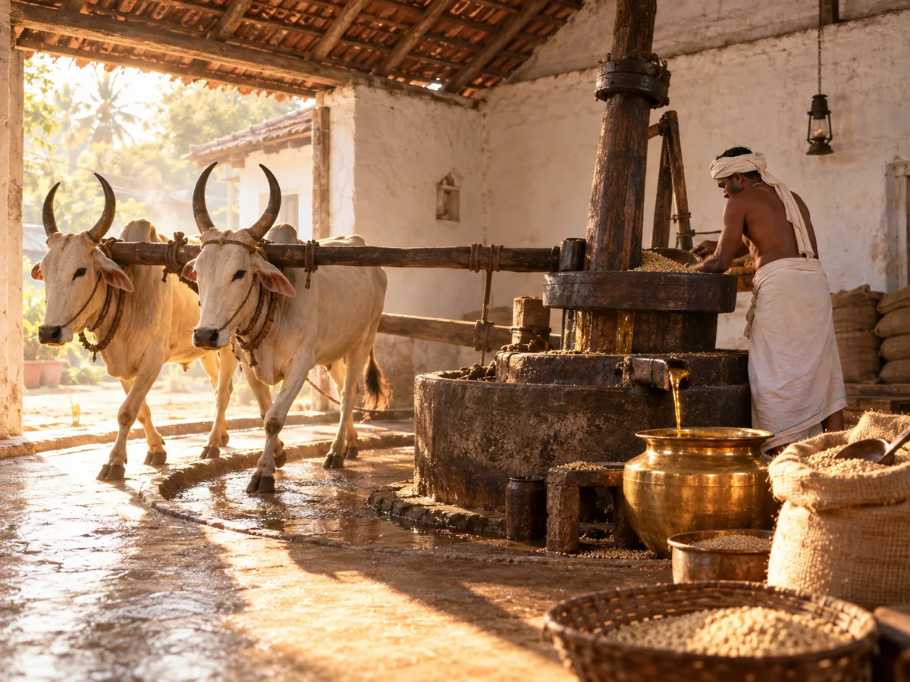
1935
Founded in Beemanagarபீமநகரில் தொடக்கம்
Gurumurthy Chettiar starts a bullock-driven oil press (maattu chekku), the only one in Trichy at the time.குருமூர்த்தி செட்டியார் மாட்டுச் செக்கைத் தொடங்கினார்; அன்றைய திருச்சியில் இருந்த ஒரே செக்கு.
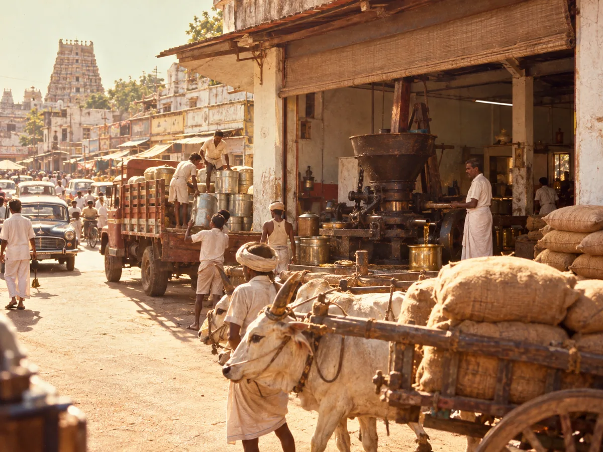
1963
A new era on E.B. Roadஇ.பி. ரோட்டில் புதிய காலகட்டம்
His son Vaithilingam Gurumurthy Chettiar moves to E.B. Road, near Gandhi Market and Trichy Bazaar, with the latest machine in India of that time, and supplies as far as Kerala and Karnataka.அவரது மகன் வைத்திலிங்கம் குருமூர்த்தி செட்டியார், காந்தி மார்க்கெட் மற்றும் திருச்சி பஜார் அருகிலுள்ள இ.பி. ரோட்டில், அன்றைய இந்தியாவின் நவீன இயந்திரத்துடன் தொழிலைத் தொடர்ந்தார்; கேரளா, கர்நாடகா உள்ளிட்ட பகுதிகளுக்கும் அனுப்பப்பட்டது.
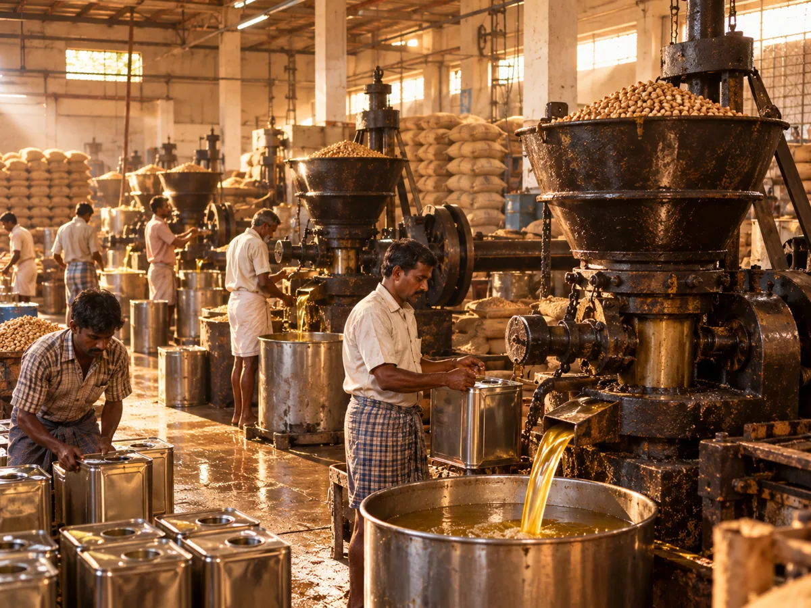
1992
Expanded productionஉற்பத்தி விரிவாக்கம்
The next generation upgraded and expanded production at the same place, becoming the most prominent oil maker and seller in Trichy and the delta region.அடுத்த தலைமுறை அதே இடத்தில் உற்பத்தியை மேம்படுத்தி விரிவாக்கியது; திருச்சி மற்றும் டெல்டா பகுதிகளில் முன்னணி எண்ணெய் தயாரிப்பாளர் மற்றும் விற்பனையாளராக உயர்ந்தது.
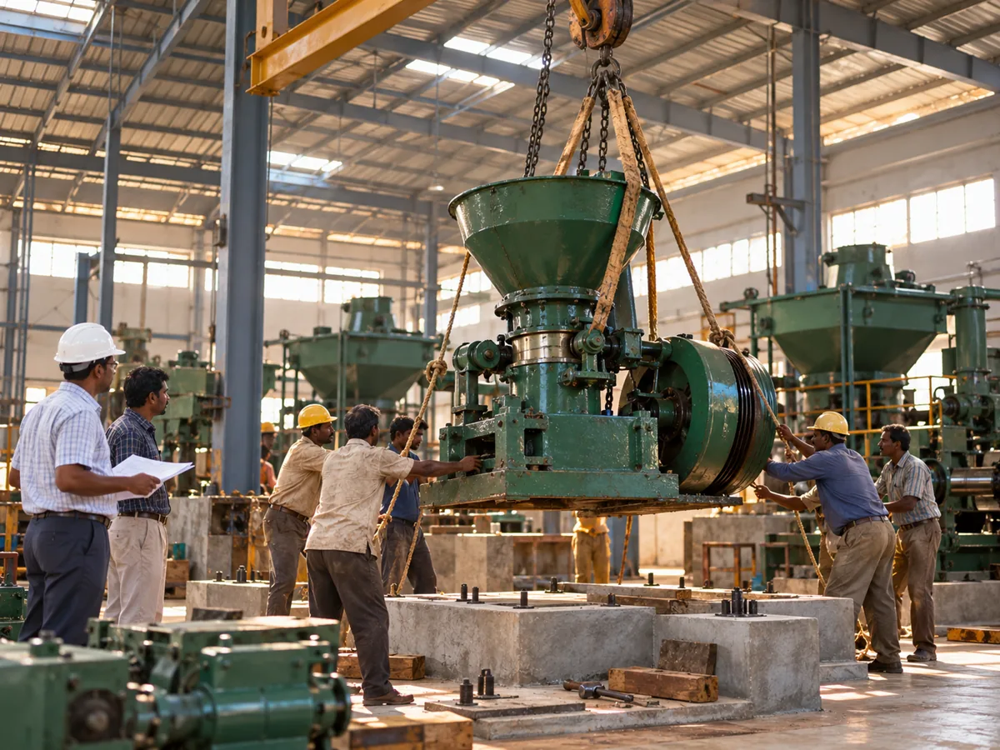
2003
New machineryபுதிய இயந்திரங்கள்
Kathirvel Vaithilingam Chettiar installs a range of new machinery.கதிர்வேல் வைத்திலிங்கம் செட்டியார் பல்வேறு புதிய இயந்திரங்களை நிறுவினார்.
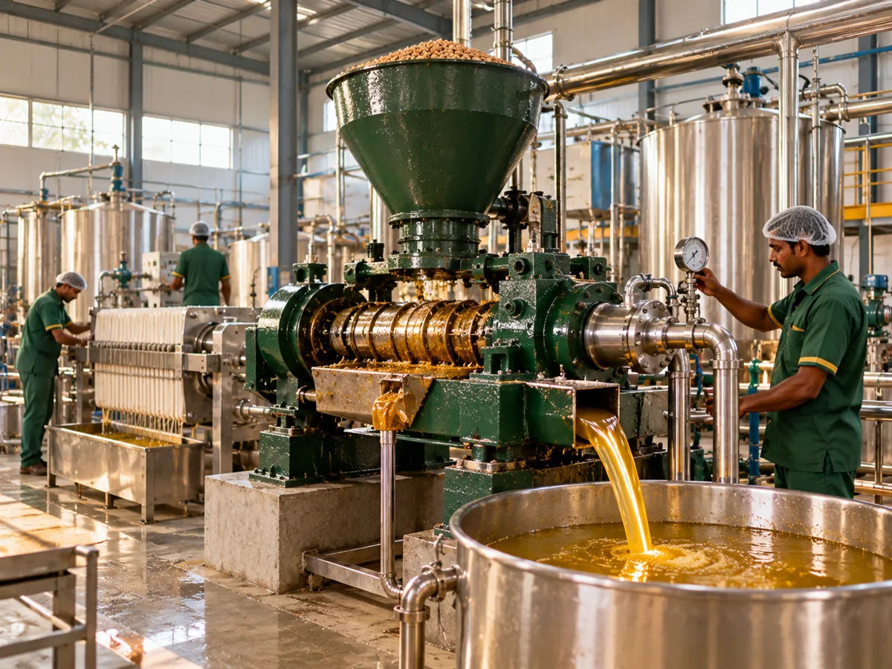
2015
Upgraded to the latestபுதிய தொழில்நுட்பம்
The oil press is upgraded to the latest technology of the time.எண்ணெய் பிழியும் இயந்திரம் அன்றைய புதிய தொழில்நுட்பத்துக்கு மேம்படுத்தப்பட்டது.
2023
Moved to Thiruvanaikoilதிருவானைக்கோயிலுக்கு மாற்றம்
The whole business moves to Thiruvanaikoil, with more room for flour mills, a rice mill and cattle feed manufacture, wholesale and retail.முழு தொழிலும் திருவானைக்கோயிலுக்கு மாற்றப்பட்டது; மாவு ஆலை, அரிசி ஆலை, கால்நடைத் தீவனத் தயாரிப்பு, மொத்த மற்றும் சில்லறை விற்பனைக்கு விரிவான இடம்.
2026
Across Tamil Naduதமிழ்நாடு முழுவதும்
Further expansion, delivery across Tamil Nadu and to prominent customers, and our groundnut oil recognised as Trichy’s best in quality and standard.மேலும் விரிவாக்கம்; தமிழ்நாடு முழுவதும் மற்றும் முக்கிய வாடிக்கையாளர்களுக்கும் விநியோகம்; எங்கள் கடலை எண்ணெய் தரத்திலும் தரநிலையிலும் திருச்சியின் சிறந்தது என்ற நிலை.
Welcome to Sri Vinayaga Oil & Flour Mills. Our family has been making oil since 1935, and today I continue it with our team. We work with gingelly, groundnut, coconut, castor and neem oils, along with grinding services and cattle feed. We value the trust of our customers in Thiruvanaikoil, Srirangam and across Tamil Nadu. Thank you for being part of our journey.ஸ்ரீ விநாயகா ஆயில் & ஃப்ளோர் மில்ஸுக்கு உங்களை அன்புடன் வரவேற்கிறோம். எங்கள் குடும்பம் 1935 முதல் எண்ணெய் தொழிலில் உள்ளது; இன்று எங்கள் குழுவுடன் அதைத் தொடர்கிறேன். நல்லெண்ணெய், கடலை எண்ணெய், தேங்காய் எண்ணெய், விளக்கெண்ணெய், வேப்ப எண்ணெய், அரைவை சேவைகள் மற்றும் கால்நடைத் தீவனம் எங்கள் பணிகள். திருவானைக்கோயில், ஸ்ரீரங்கம் மற்றும் தமிழ்நாடு முழுவதும் உள்ள வாடிக்கையாளர்களின் நம்பிக்கையை மதிக்கிறோம். எங்கள் பயணத்தில் உடன் இருப்பதற்கு நன்றி.
Every bottle holds oil from a single kind of seed. We never blend oils.ஒவ்வொரு பாட்டிலிலும் ஒரே வகை விதையிலிருந்து கிடைக்கும் எண்ணெய். எண்ணெய்களைக் கலப்பதில்லை.
No roastingவறுப்பதில்லை
Sun-dried seed is pressed straight away, without roasting.விதைகளை வெயிலில் உலர்த்தியதும், வறுக்காமல் நேரடியாக எண்ணெய் பிழிகிறோம்.
Settled, not filteredதெளிய வைத்தது, வடிகட்டாதது
The oil settles for 4 to 7 days. No filtering, no refining.எண்ணெய் 4–7 நாட்கள் தெளிய வைக்கப்படுகிறது. வடிகட்டுவதும் சுத்திகரிப்பதும் இல்லை.
Pressed in our own millஎங்கள் சொந்த மில்லில்
The oil is pressed here in Thiruvanaikoil by the family that has been making oil since 1935.1935 முதல் எண்ணெய் தயாரிக்கும் குடும்பத்தால், திருவானைக்கோவிலில் இங்கேயே பிழியப்படுகிறது.
Packs for every kitchenஎல்லா சமையலறைக்கும் ஏற்ற அளவு
500 ml and 1 L bottles, 5 L cans and 15 kg tins. Packaging can be customised for bulk orders.500 மி.லி, 1 லிட்டர் பாட்டில்கள், 5 லிட்டர் கேன், 15 கிலோ டின். மொத்த ஆர்டருக்கு பேக்கிங்கை உங்கள் தேவைக்கேற்ப மாற்றலாம்.
Delivered across Tamil Naduதமிழ்நாடு முழுவதும் விநியோகம்
Order online and we deliver to your door, anywhere in the state.ஆன்லைனில் ஆர்டர் செய்யுங்கள்; மாநிலத்தில் எங்கும் உங்கள் வீடு தேடி விநியோகிப்போம்.
Where is my order?என் ஆர்டர் எங்கே?
Enter the number we gave you and the mobile number you used. No sign-in needed.நாங்கள் கொடுத்த எண்ணையும் நீங்கள் பயன்படுத்திய கைப்பேசி எண்ணையும் உள்ளிடுங்கள். உள்நுழைவு தேவையில்லை.
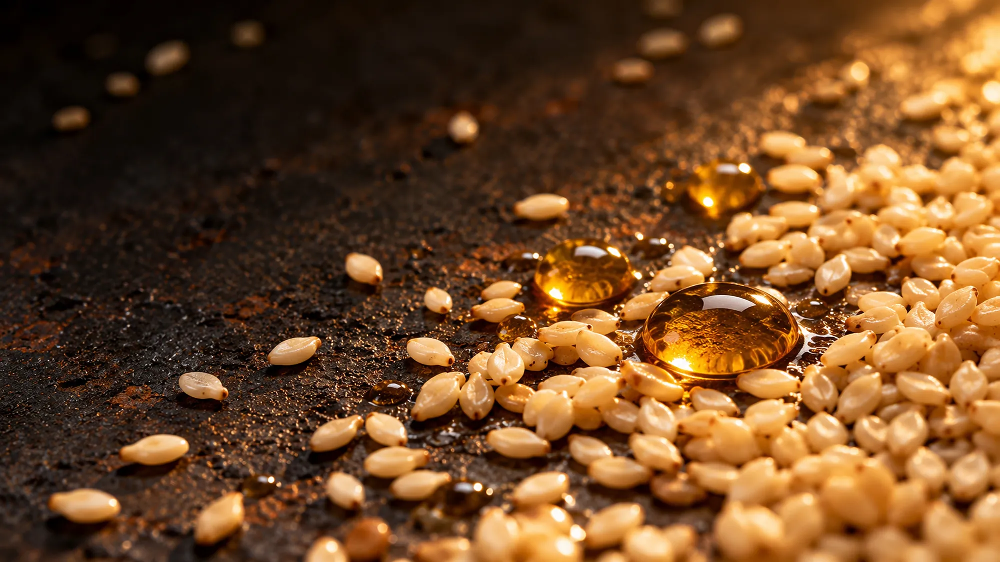
Share a bottle with a friend, and you both earn points.நண்பருடன் ஒரு பாட்டிலைப் பகிருங்கள்; இருவருக்கும் புள்ளிகள்.
Every order earns pointsஒவ்வொரு ஆர்டருக்கும் புள்ளிகள்
What customers sayவாடிக்கையாளர் கருத்துகள்
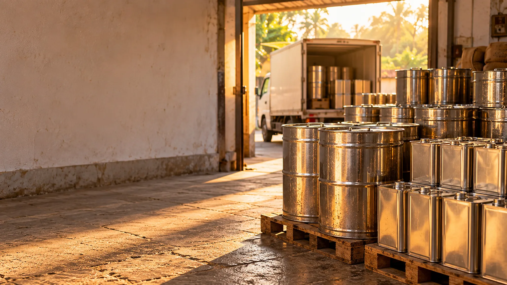
Buying for a business or a function?வணிகத்துக்கோ விழாவுக்கோ வாங்குகிறீர்களா?
Hotels, temples, caterers, shops and regular monthly buyers: tell us what you need and we will call you with a quote.ஹோட்டல்கள், கோயில்கள், சமையல் கலைஞர்கள், கடைகள் மற்றும் மாதாந்திர வாடிக்கையாளர்கள்: தேவையைச் சொல்லுங்கள், விலைப்பட்டியலுடன் நாங்கள் அழைக்கிறோம்.
More than 5 tins of 15 kg, or drums5 டின்களுக்கு மேல் (15 கிலோ) அல்லது டிரம்கள்
Monthly or weekly supply on a fixed scheduleமாதாந்திர அல்லது வாராந்திர நிலையான விநியோகம்
Packaging material customised to youஉங்களுக்கேற்ற பேக்கிங் பொருள்
Delivery across Tamil Naduதமிழ்நாடு முழுவதும் விநியோகம்
Questions, answeredஉங்கள் கேள்விகளுக்கு பதில்
Quick answers about our oils, delivery, payment and returns.எங்கள் எண்ணெய்கள், டெலிவரி, பணம் செலுத்துதல், திருப்பி அளித்தல் பற்றிய சுருக்கமான பதில்கள்.
Where is the mill and where do you deliver?மில் எங்கே இருக்கிறது, எங்கெல்லாம் டெலிவரி செய்கிறீர்கள்?
Our family mill is at 120 Vellalar Street, Kondayampettai Agraharam, Thiruvanaikoil, Srirangam, Trichy, and has been running since 1935. We deliver across Tamil Nadu.எங்கள் குடும்ப மில் 120 வேளாளர் தெரு, கொண்டையம்பேட்டை அக்ரஹாரம், திருவானைக்கோவில், ஸ்ரீரங்கம், திருச்சியில் 1935 முதல் இயங்குகிறது. தமிழ்நாடு முழுவதும் டெலிவரி செய்கிறோம்.
How is your oil made?உங்கள் எண்ணெய் எப்படி தயாரிக்கப்படுகிறது?
We dry the seed in the sun and press it in our own iron cast screw expeller at the mill. The oil is settled and never filtered, and each bottle holds one seed type only.விதையை வெயிலில் உலர்த்தி, மில்லில் எங்கள் இரும்பு வார்ப்பு ஸ்க்ரூ எக்ஸ்பெல்லரில் பிழிகிறோம். எண்ணெய் தெளிய வைக்கப்படுகிறது, வடிகட்டப்படுவதில்லை; ஒவ்வொரு பாட்டிலிலும் ஒரே வகை விதை மட்டுமே.
Which oils and pack sizes do you sell?என்னென்ன எண்ணெய்கள், எந்தெந்த அளவுகளில் கிடைக்கும்?
Gingelly (sesame), groundnut and coconut oils for cooking, and castor and neem oils for traditional household, external and lamp use. Cooking oils come in 500 ml, 1 litre, 5 litre cans and 15 kg tins; neem oil comes in a 100 ml bottle.சமையலுக்கு நல்லெண்ணெய், கடலை எண்ணெய், தேங்காய் எண்ணெய்; பாரம்பரிய வீட்டு, வெளிப்பூச்சு, விளக்கு பயன்பாட்டிற்கு விளக்கெண்ணெய், வேப்ப எண்ணெய். சமையல் எண்ணெய்கள் 500 மி.லி, 1 லிட்டர், 5 லிட்டர் கேன், 15 கிலோ டின் அளவுகளில்; வேப்ப எண்ணெய் 100 மி.லி பாட்டிலில்.
How can I pay?எப்படி பணம் செலுத்தலாம்?
You can pay online by UPI (a QR code appears after you place the order) or pay on delivery.UPI மூலம் ஆன்லைனில் (ஆர்டர் செய்த பின் QR குறியீடு தோன்றும்) அல்லது டெலிவரியில் செலுத்தலாம்.
How long does delivery take and what does it cost?டெலிவரிக்கு எவ்வளவு நாட்கள் ஆகும், கட்டணம் என்ன?
Delivery takes 2 to 5 working days after dispatch. The delivery fee and the order value above which delivery is free are shown in your cart before you pay.அனுப்பிய பின் 2 முதல் 5 வேலை நாட்கள் ஆகும். டெலிவரி கட்டணமும், எந்த ஆர்டர் தொகைக்கு மேல் டெலிவரி இலவசம் என்பதும் பணம் செலுத்தும் முன் கூடையில் காட்டப்படும்.
Can I return an oil?எண்ணெயைத் திருப்பி அளிக்கலாமா?
Food products are not returnable. If there is a genuine quality problem, tell us within 2 days of delivery with an unboxing video and we will decide within 3 working days. Approved refunds are paid in 5 to 7 working days. Read the full return and refund policy on our policies page.உணவுப் பொருட்களைத் திருப்பி எடுக்க இயலாது. உண்மையான தரக் குறைபாடு இருந்தால் டெலிவரி ஆன 2 நாட்களுக்குள் பார்சல் திறக்கும் வீடியோவுடன் தெரிவியுங்கள்; 3 வேலை நாட்களில் முடிவு தெரிவிப்போம். ஒப்புதல் பெற்ற பணத்திருப்பம் 5 முதல் 7 வேலை நாட்களில் செலுத்தப்படும். முழு விவரம் கொள்கைகள் பக்கத்தில்.
Do I need an account to order?ஆர்டர் செய்ய கணக்கு தேவையா?
No. You can order as a guest with your name, mobile number and address. With an account you can see past orders, buy again and earn reward points.தேவையில்லை. பெயர், மொபைல் எண், முகவரி கொடுத்து விருந்தினராக ஆர்டர் செய்யலாம். கணக்கு இருந்தால் முந்தைய ஆர்டர்களைப் பார்க்கலாம், மீண்டும் வாங்கலாம், வெகுமதிப் புள்ளிகள் பெறலாம்.
How do I track my order?ஆர்டரை எப்படி கண்காணிப்பது?
Use the Track your order section on this page with your order number and mobile number. No sign-in is needed.இந்தப் பக்கத்தில் உள்ள ஆர்டரைக் கண்காணி பகுதியில் ஆர்டர் எண்ணையும் மொபைல் எண்ணையும் கொடுக்கவும். உள்நுழைவு தேவையில்லை.
Do you supply hotels, temples and shops in bulk?ஹோட்டல்கள், கோயில்கள், கடைகளுக்கு மொத்தமாக வழங்குகிறீர்களா?
Yes. Send a bulk enquiry from the bulk supply section of this page with the oils and quantity you need, and the mill will call you back.ஆம். இந்தப் பக்கத்தின் மொத்த விநியோகப் பகுதியில் தேவையான எண்ணெய், அளவுடன் விசாரணை அனுப்புங்கள்; மில்லிலிருந்து உங்களை அழைப்போம்.
Services available at the mill. Call or visit for details and rates.மில்லில் கிடைக்கும் சேவைகள். விவரம் மற்றும் விலைக்கு அழைக்கவும் அல்லது நேரில் வரவும்.
Flour grindingமாவு அரைத்தல்
Grinding services for flour.மாவு அரைக்கும் சேவை.
Herbal and bath powdersமூலிகை, குளியல் பொடி
Grinding of herbal powders and bath powders.மூலிகைப் பொடி மற்றும் குளியல் பொடி அரைத்தல்.
Cattle feedகால்நடைத் தீவனம்
Cattle feed is part of what we deal in.கால்நடைத் தீவனமும் எங்கள் தொழிலின் ஒரு பகுதி.
Something missing from the shelf?தேவையான பொருள் இல்லையா?
Tell us what you would like the mill to make or stock. We read every suggestion.மில் தயாரிக்க அல்லது வைத்திருக்க வேண்டிய பொருளைச் சொல்லுங்கள். ஒவ்வொரு பரிந்துரையையும் படிக்கிறோம்.